The original Old School RuneScape client has improved over time, but RuneLite is still miles ahead. It offers a huge range of features that are hard to ignore, and developers consistently push updates that improve both new and existing content.
In my opinion, players should stay up to date with the latest RuneLite plugins. If you're not using them, you should be. The right plugins can make the game feel much smoother, whether you're doing content you already enjoy or trying something you've been putting off because it felt too difficult.
This guide covers some of the best and most recent plugins that are actually worth using. With over 1,000 plugins available, it's easy to feel overwhelmed, so I've narrowed it down to the ones that will give you the most value.
How to Install RuneLite Plugins
To install plugins on RuneLite, you first need to install the client itself. You can download it from the official website (runelite.net) or through the Jagex Launcher by selecting RuneLite.
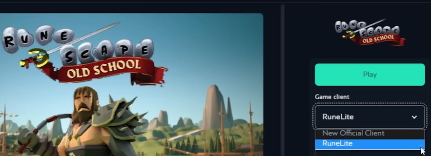
After installing the app, you can find plugins by opening the sidebar toolbar. Each plugin has a settings icon next to it, allowing you to tweak its features to suit your needs. However, not all plugins are available there — some, especially newer ones, need to be installed through the Plugin Hub.
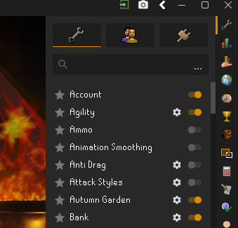
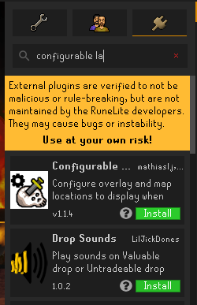
Best RuneLite Plugins
Below are the top picks from the bald.gg team — sorted by category and usefulness. These are the ones that actually make a noticeable difference.
AFK Overlay
This plugin is a must-have for players doing any AFK activity. It opens a small, movable, resizable window that shows your current HP and Prayer, remaining inventory slots, and idle status. You can also set it to change color when you go idle or when your HP, Prayer, or inventory hits a certain threshold.
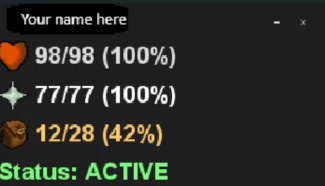
It can be a lifesaver, especially for tasks like Slayer, and makes AFK skilling much easier. You can even use it across multiple accounts, each with its own overlay.
Bank Organizer
If you’ve been procrastinating organizing your bank, it might have actually paid off. This plugin makes it so much easier. It helps you sort things out by highlighting different groups of items.
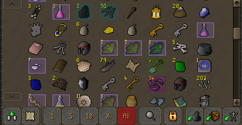
It categorizes items like combat gear, skilling tools, food, potions, and more, and highlights each group with different colours. This makes it easy to mindlessly move items into the correct bank tab.
Simply install it from the Plugin Hub, then open the settings icon next to it in your plugins list. From there, you can tick each category and customize the colour for each one.
Configurable Slayer Tasks
This plugin lets you customize the information overlayed on your screen when you’re assigned a Slayer task. It’s a really useful plugin that removes a lot of the thinking you’d normally have to do.
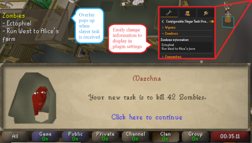
You can add details like the best gear to use, monster weaknesses, and any extra notes for each task. You can also mark locations on the world map to guide you.
When you’re assigned that task, the plugin overlays your saved information on screen and points you to your marked location—similar to how the quest helper and clue scroll plugins work.
It can be configured for every single Slayer task, making it extremely useful if you want a smoother and more efficient experience.
It’s especially useful for efficiency-focused players who want quick access to task setups without checking external guides.
Fixed-Resizable Layout
This plugin lets you keep the fixed mode aesthetics while still benefiting from resizable mode, such as a larger game viewport and a minimizable chat box. It’s a game-changer for players who have always wanted the best of both worlds.
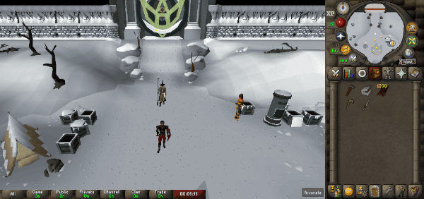
To use it, install and enable it through the Plugin Hub, then set your game client layout to Resizable – Classic in the display settings. For the best results, enable Stretched Mode and set scaling to 100% to prevent gaps between the inventory and minimap.
Enable it through the Plugin Hub, then set your layout to Resizable – Classic. Enable Stretched Mode and set scaling to 100% for best results.
Gemstone Crab
The Gemstone Crab has quickly become one of the best ways to train combat. This plugin is designed to improve your AFK experience there, helping you maintain the best possible XP rates by minimizing downtime.
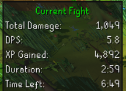
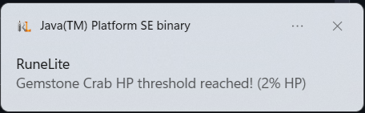
It tracks the crab’s HP and sends a desktop notification when it reaches a user-defined threshold (default: 2%), and also highlights the tunnel once the crab dies. It also displays useful fight stats, including DPS, total Gemstone Crabs killed, and total cumulative XP gained.
It helps you maximize AFK combat training efficiency while keeping full awareness of kill tracking and XP gains.
Glamourer
This RuneLite plugin got a lot of attention when it was first released. It lets players customize the appearance of nearly any item purely for fashion. The main downside is that these changes are client-side, so no other player will be able to see them.
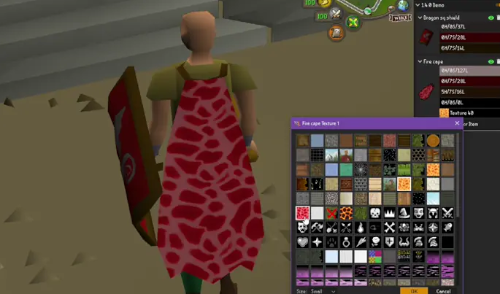
You can also change whether the glamour on certain items appears on other players on your screen, which adds even more control over how things look. Another nice feature is that you can import and export plates, making it easy to save your outfits or share your ideas with friends.
Mastering Mixology plugin
The Mastering Mixology minigame can be complex to learn and tiring to play for long periods, with multiple steps that can get confusing. This plugin simplifies the entire process, making the minigame much easier and more manageable.

It adds the potion recipe directly to the standard interface, highlights each station, and marks Digweed to make it easier to spot. It also includes several customization options to fit your preferences.
If you want to learn the minigame—especially with the help of this plugin—check out our Mastering Mixology guide for a quick rundown of how it works and how to get the best XP and points.
More Status Bars
This plugin enhances the default status bars by letting you display up to four at once near your inventory. You can track Hitpoints, Prayer, Run Energy, Special Attack, and even Warmth while at Wintertodt.
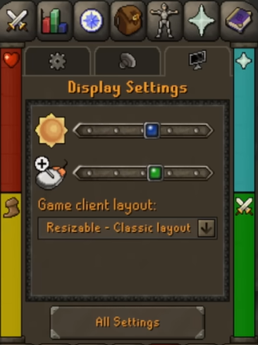
It makes it much easier to see everything at a glance without looking up to the usual interface, and since it’s positioned close to your inventory, it feels more natural to check while interacting with items.
Random Events Helper
This plugin highlights the solution to each random event in the game. Most players usually skip these since the rewards aren’t always worth the time it takes to solve the puzzles, but with this, you can quickly speed through them and still earn the rewards.
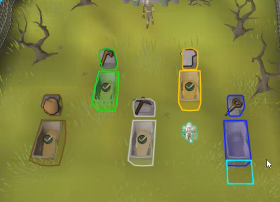
This is especially helpful for Ironman accounts, since you can get lucky with items that might otherwise be difficult or time-consuming to obtain.
Visibility
This plugin was built for raid teams to improve visibility during group content. It lets you adjust opacity so you can focus on what matters without unnecessary distractions. It’s mainly aimed at content like Tombs of Amascut, Chambers of Xeric, Theatre of Blood, and Nex.
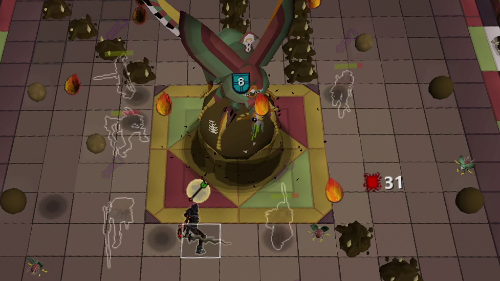
You can hide or adjust the opacity of other players, your own projectiles, thralls, and your teammates’ projectiles. It also provides outline options for yourself, thralls, and teammates, making it easier to track everything during intense encounters.
Fishing Spot Tracker
Before, RuneLite could only highlight active fishing spots, and players had no way of knowing when they would deplete (except for Minnows). With this plugin, you can now see exactly how long each fishing spot will last.
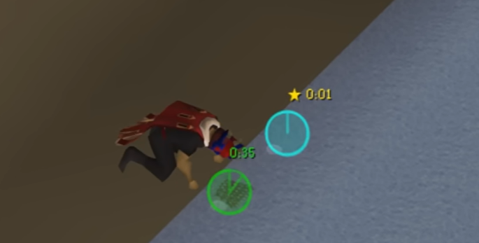
It features a pie timer that fills and drains, giving a clear visual of when it’s time to move. There’s also a color gradient that shifts from cyan (full) to red (expiring), along with a timer, idle notifications, and a gold star highlighting the next fishing spot.
It makes AFK fishing much smoother by helping you predict when spots will disappear.
Menu Entry Swapper
This plugin enables you to change the default left-click and shift-click options when hovering over in-game items or objects. It makes a lot of content easier—for example, during Prayer training, you can configure left-click to enter “last-house” and use bones on the altar instead of burying them.

One of its most helpful recent features is the ability to remove menu options for dead NPCs. This prevents you from accidentally clicking them while they’re dying or misclicking when casting spells, which is especially useful for content like the Inferno.
If you’re looking to complete the Inferno as quickly as possible, our team can help with that. Check our services page and place an order, and we’ll get it done in no time.
Best Sailing Plugins
Since Sailing is relatively new, plugins are just starting to come out that make the skill a lot easier to train. Even players who already have 99 can definitely say these would have been a game-changer for them.
If you want to get started with Sailing, check out our Sailing guide for a quick overview of how the skill works and how to get the best XP and rewards.
Sailing
This is an all-purpose plugin for Sailing. It highlights rapids, trimmable sails, sea charting locations, and crates in Barracuda Trials, along with many other features.
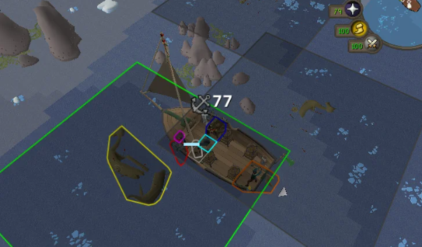
Once installed, you can easily spot any of them and get some extra XP where possible.
Deep Sea Trawling Plugin
This plugin makes the Deep Sea Trawling activity much easier by helping you track different fish shoals and their depths.
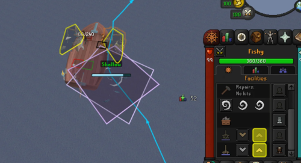
It shows shoal paths, tags each shoal with a coloured square, includes a depth indicator for each one, and even highlights the UI buttons you need to click, along with many other features. It turns a tedious skilling method into something much more enjoyable.
Barracuda Trials Pathfinder
This plugin shows the quickest path to follow for all three Barracuda Trials: Tempest Tantrum, Jubbly Jive, and Gwentih Glide.
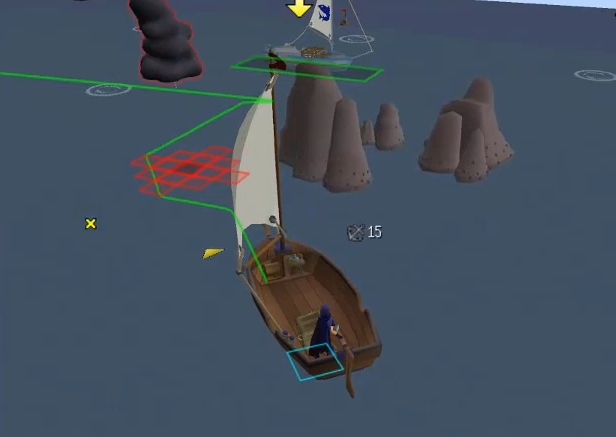
It also lets you choose between relaxed paths (smoother routes) or efficient ones (more speed boosts and tighter turns).
Salvage Sack
This plugin shows salvage loot based on shipwreck type, from small shipwrecks all the way up to merchant shipwrecks.
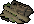
Once installed, it’s enabled by default. Click the Salvage Sack icon in the RuneLite sidebar to open the panel, then just play Sailing and salvage as usual. The panel will automatically update with your loot as you go — no setup needed.
Conclusion
RuneLite continues to push the boundaries of what the Old School RuneScape client can do. With new plugins being released regularly, there’s always something that can improve your experience, whether it’s saving time, reducing effort, or just making the game more enjoyable.
The key is not to overwhelm yourself. You don’t need every plugin—just the ones that actually help with the content you’re doing. Start with a few, get used to them, and gradually add more as needed.
If you’ve been putting off certain activities because they felt too tedious or complicated, there’s a good chance a plugin can make them much easier. Staying up to date with the best ones can genuinely change how the game feels.